Lionel Andrés Messi was born on June 24, 1987, in Rosario, Argentina. He grew up in a football-loving family, Messi was born into a close family. His father, Jorge Messi, worked in a steel factory, while his mother, Celia Cuccittini, worked in a magnet manufacturing workshop. He has three siblings: two brothers, Rodrigo and Matías, and a sister named María Sol. Messi later married his childhood friend, Antonela Roccuzzo, in 2017, and they have three sons: Thiago, Mateo, and Ciro. and started playing football at a very young age. As a child, Messi showed exceptional talent and a strong passion for the game. His family quickly realized that he had the potential to become a great footballer.
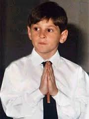
At the age of 13, Messi moved to Spain to join FC Barcelona's youth academy, La Masia. Moving to another country was a major challenge for such a young boy, but Messi continued to work hard and develop his skills. Barcelona supported his football development, and he gradually became one of the most promising young players at the club.
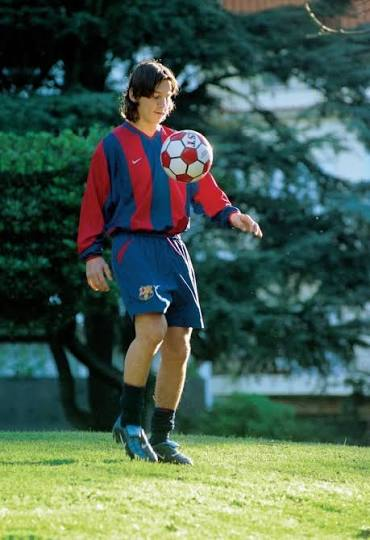
Messi made his official first-team debut for Barcelona in 2004 when he was only 17 years old. His incredible dribbling, speed, vision, and ability to score goals quickly attracted the attention of football fans around the world. Over the following years, he became an important player for Barcelona and helped the club win many major trophies.
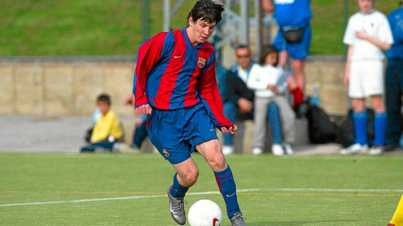
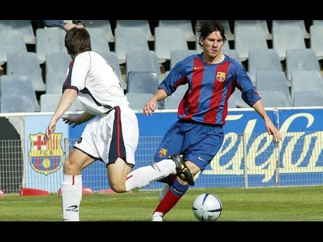
Messi also had a long and challenging career with the Argentina national team. For many years, he faced criticism because he had not won a major international trophy with Argentina. However, he continued to represent his country and never gave up. His determination eventually led to historic success.
In 2021, Messi won his first major international trophy with Argentina by winning the Copa América. This achievement was very important to him and to Argentine football fans. In 2022, he reached the greatest moment of his international career when Argentina won the FIFA World Cup in Qatar. Messi played a key role throughout the tournament and won the Golden Ball as the best player of the competition.
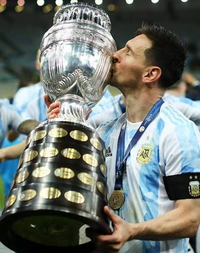
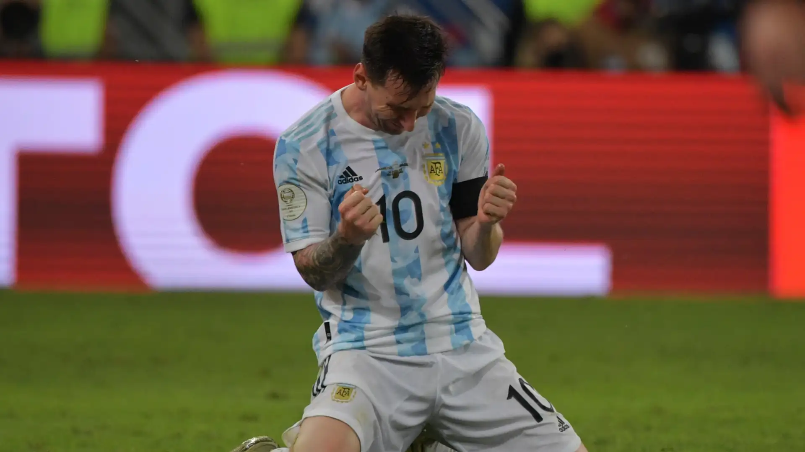

During his time at Barcelona, Messi became the club's greatest player and one of the most successful footballers in history. He won 10 La Liga titles, 7 Copa del Rey titles, and 4 UEFA Champions League trophies with the club. He also became Barcelona's all-time top scorer, scoring more than 670 goals in official competitions. Messi won the Ballon d'Or six times while playing for Barcelona and played a major role in the club's historic successes, including the famous treble in the 2008–09 and 2014–15 seasons.
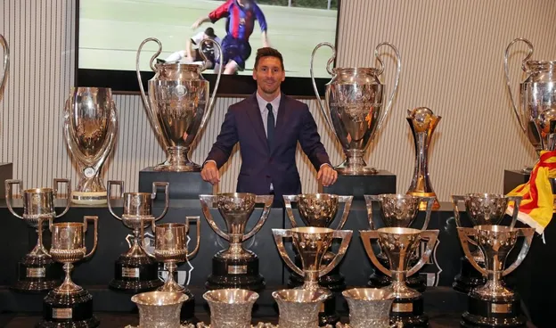
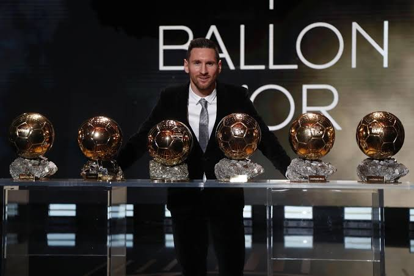
In2021, Messi joined Paris Saint-Germain (PSG) after leaving Barcelona. He spent two seasons with the French club and played alongside other world-class players, including Neymar and Kylian Mbappé. During his time at PSG, Messi won two Ligue 1 titles and the 2022 Trophée des Champions. He also scored 32 goals and provided 35 assists in 75 appearances for the club. Although his time in Paris was not as successful as his years at Barcelona, Messi remained an important player and continued to demonstrate his incredible ability.
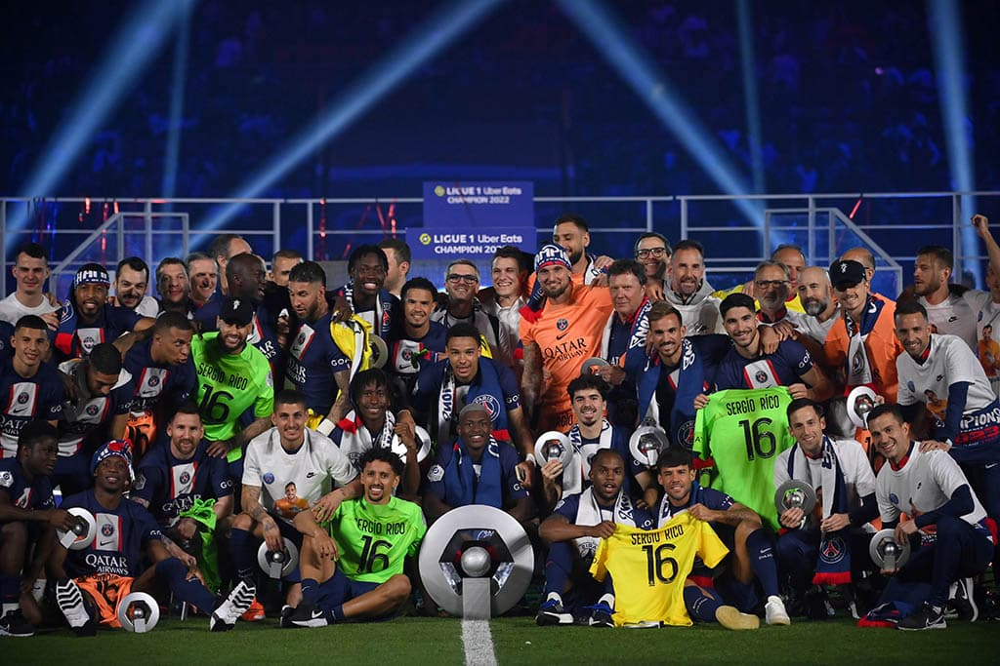
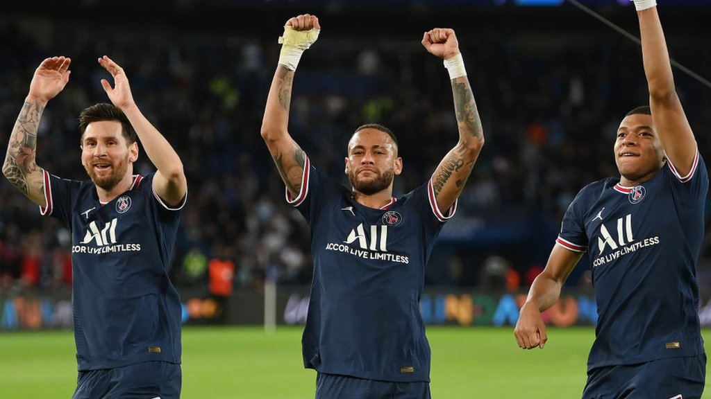
In 2026, Messi returned to the World Cup with Argentina at the age of 39. He led his team to the final and delivered another impressive tournament, scoring eight goals and providing four assists. However, Argentina faced Spain in the final and lost 1–0 after extra time. Ferran Torres scored the winning goal in the 106th minute, ending Argentina's hopes of defending their World Cup title. Despite the defeat, Messi's performance was considered one of the highlights of the tournament, and he finished the competition as one of its most influential players.
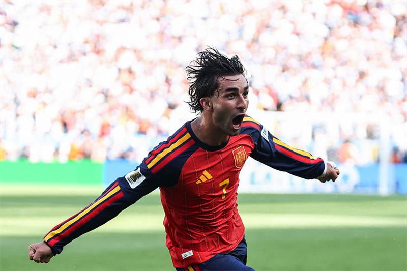

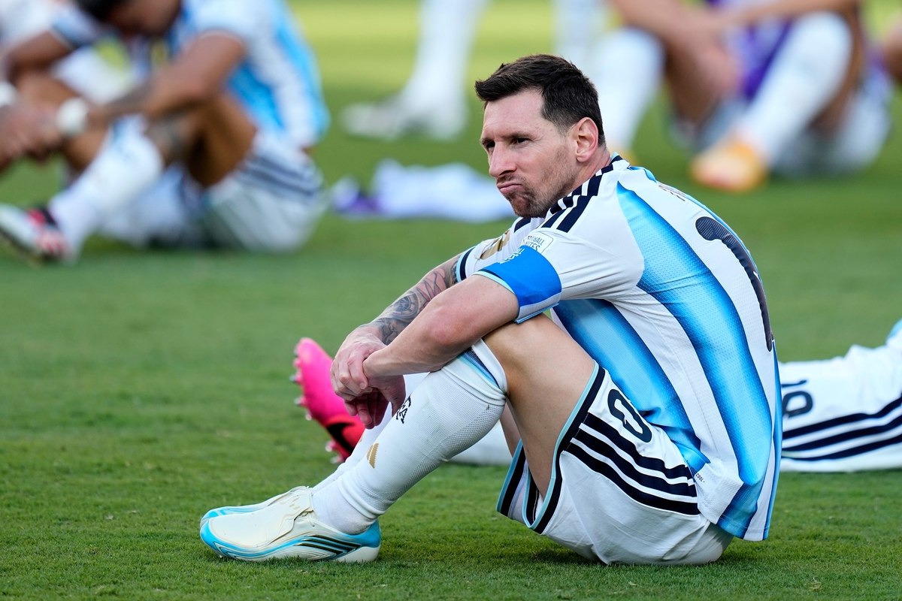
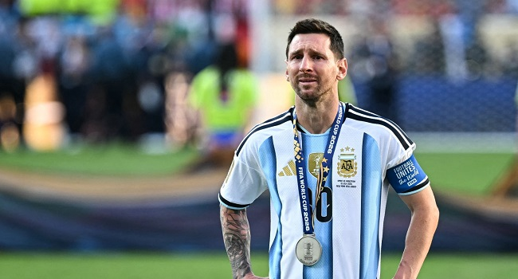
He later moved to Inter Miami in 2023, where he continued his career in Major League Soccer. His arrival brought enormous attention to American football and helped increase the popularity of the sport in the United States.
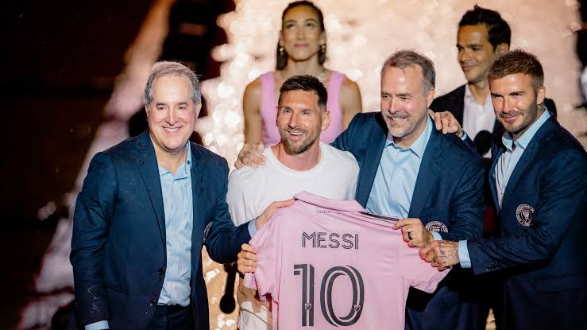
Lionel Messi's life is a story of talent, hard work, patience, and determination. From a young boy in Rosario to a World Cup champion, he overcame many challenges and became an inspiration to millions of people around the world. His achievements have made him one of the most influential and successful footballers in history.
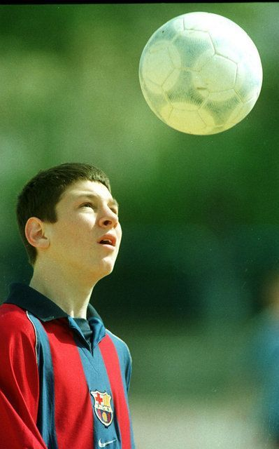
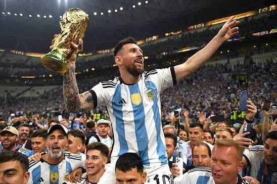